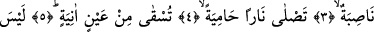
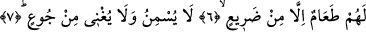

KIYAMETİN HABERİ
SANA GELDİ Mİ?
Bismillâhirrahmânirrahîm
1. (Rasûlüm!) Dehşeti her şeyi kaplayan kıyametin haberi sana geldi mi?
2. O gün bir takım yüzler zelildir,
3. Durmadan çalışır, (fakat boşuna) yorulur,
4. Kızgın ateşe girer.
5. Onlara kaynar su pınarından içirilir.
6. Onlar için kuru dikenden başka yemek yoktur,
7. O ise ne besler ne de açlığı giderir.
Arapça dilbilgisi âlimlerinden Kutrub bu âyet-i kerimenin başında yer alan “hel”
soru edatını istifham-ı takriri şeklinde alarak âyet-i kerimeyi: “Ey Muhammed sana
ğaşiye’nin haberi mutlaka geldi” şeklinde anlamıştır. Ebu’s-Suud (rh) İrşadü’l-akli’s-
selim isimli tefsirinde Kutrub’un yukardaki açıklamasına katılmaz. Ona göre buradaki
soru ile başına geldiği cümlede ta’cib, hayrete düşürme kasdedilmiştir. Ayrıca bununla
söz konusu cümleye kulak vermeye teşvik kasdedildiği gibi bu cümlenin dilden dile
nakledilmeye değer, gerek şehirli gerek bedevi herkesin almak üzere yarışmalarına
lâyık çok parlak ifâdeler olduğuna işâret edilmek istenmiştir.
Âyet-i kerimede yer alan el-ğaşiye; şiddeti herkesi kuşatan, korkusu herkesi kaplayan
çok şiddetli bir musîbet demektir. Bu da kıyamettir. Nitekim kıyametin şiddetinin
herkesi kuşatacak olduğuna bir başka âyet-i kerime şu şekilde işâret etmektedir: “O
günde azap, onları hem üstlerinden hem ayaklarının altından saracak” (Ankebut,
29/55) Yine bu konuda bir başka âyet-i kerimede şu ifâdelerle karşılaşıyoruz: “O
kullar, şiddeti her yere yayılmış olan bir günden korkarak verdikleri sözü yerine
getirirler.” (İnsan, 76/7) Ğaşiye kelimesinde herhangi bir nesneyi dört bir yanından
kuşatma anlamı olduğunu söyledik. Nitekim bir şeyi bütün her yanından kuşatan nesneye
arapçada bu kökten türeme olarak “ğâşiy” denilir.